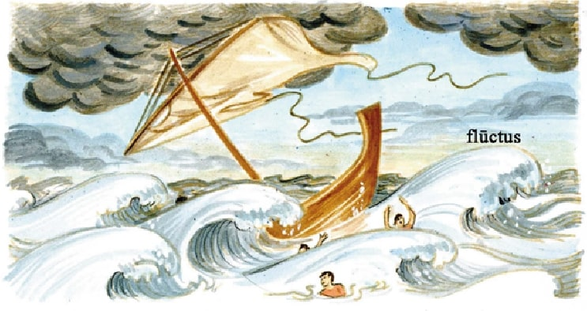
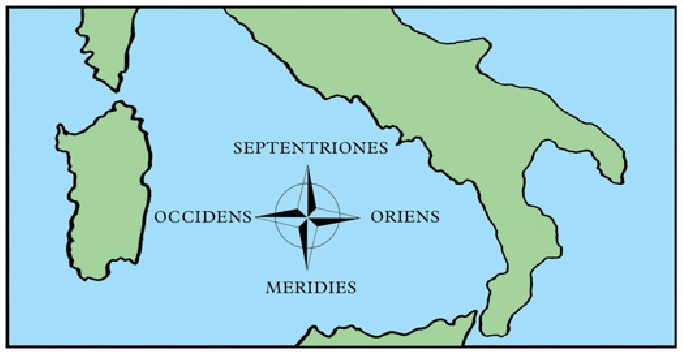

TEMPESTAS
I
Italia inter duo maria interest, quōrum alterum, quod suprā Italiam situm est, ‘mare Superum’ sīve ‘Hadriāticum’ appellātur, alterum, īnfrā Italiam situm, ‘mare Īnferum’ sīve ‘Tūscum’. Tōtum illud mare longum et lātum quod inter Eurōpam et Āfricam interest ‘mare nostrum’ appellātur ā Rōmānīs.
Urbs Rōma nōn ad mare, sed ad Tiberim flūmen sita est vīgintī mīlia passuum ā marī. Quod autem paulum aquae est in Tiberī, magnae nāvēs in eō flūmine nāvigāre nōn possunt. Itaque parvae tantum nāvēs Rōmam adeunt.
Ōstiam omnēs nāvēs adīre possunt, id enim est oppidum maritimum quod magnum portum habet. Ad ōstium Tiberis sita est Ōstia. (‘Ōstium’ sīve ‘ōs’ flūminis dīcitur is locus quō flūmen in mare īnfluit; Ōstia sita est eō locō quō Tiberis in mare Īnferum īnfluit.)
Alia oppida maritima quae magnōs portūs habent sunt Brundisium, Arīminum, Genua, Puteolī. Haec omnia oppida in ōrā maritimā sita sunt. (Ōra maritima est fīnis terrae unde mare incipit. Portus est locus in ōrā maritimā quō nāvēs ad terram adīre possum.) In ōrā Italiae multī portūs sunt. Ex omnibus terrīs in portūs Italiae veniunt nāvēs, quae mercēs in Italiam vehunt. (Mercēs sunt rēs quās mercātōrēs emunt ac vēndunt.)
Nōn modo mercēs, sed etiam hominēs nāvibus vehuntur. Portus Ōstiēnsis semper plēnus est hominum quī in aliās terrās nāvigāre volunt. Is quī nāvigāre vult adit nautam quī bonam nāvem habet. Sī āēr tranquillus est, necesse est ventum opperīrī. (Ventus est āēr quī movētur.) Cum nūllus ventus super mare flat, tranquillum est mare; cum magnus ventus flat, mare turbidum est.
Tempestās est magnus ventus quī mare turbat ac flūctūs facit quī altiōrēs sunt quam nāvēs. Nautae tempestātēs metuunt, nam magnī flūctūs nāvēs aquā implēre possunt. Tum nāvēs et nautae in mare merguntur.

Nautae nec marī turbidō nec marī tranquillō nāvigāre volunt; itaque in portū ventum secundum opperiuntur (id est ventus quī ā tergō flat). Ventō secundō nāvēs ē portū ēgrediuntur: vēla ventō implentur ac nāvēs plēnīs vēlīs per mare vehuntur.
II
Pars nāvis posterior puppis dīcitur. In puppī sedet nauta quī nāvem gubernat. Quōmodo nāvis in mediō marī gubernārī potest, cum terra nūlla vidētur? Gubernātor caelum spectat: in altō marī sōl aut stēllae eī ducēs sunt. Ea pars caelī unde sōl oritur dīcitur oriēns. Partēs caelī sunt quattuor: oriēns et occidēns, merīdiēs et septentriōnēs. Occidēns est pars caelī quō sōl occidit. Merīdiēs dīcitur ea caelī pars ubi sōl merīdiē vidētur; pars contrāria septentriōnēs appellātur ā septem stēllīs quae semper in eā caelī parte stant. Iīs quī ad septentriōnēs nāvigant, oriēns ā dextrā est, ā sinistrā occidēns, merīdiēs ā tergō. Oriēns et occidēns partēs contrāriae sunt, ut merīdiēs et septentriōnēs. —

Hodiē caelum serēnum et ventus secundus est. Nāvēs multae simul ē portū Ōstiēnsī ēgrediuntur. Inter eōs hominēs quī nāvēs cōnscendunt est Mēdus, quī ex Italiā proficīscitur cum amīcā suā Lȳdiā. Mēdus, quī Graecus est, in patriam suam redīre vult. Graecia nōn modo ipsīus patria est, sed etiam Lȳdiae.
Mēdus et Lȳdia ex Italiā proficīscentēs omnēs rēs suās sēcum ferunt: pauca vestīmenta, paulum cibī nec multum pecūniae. Praetereā Lȳdia parvum librum fert, quem sub vestīmentīs occultat.
Sōle oriente nāvis eōrum ē portū ēgreditur multīs hominibus spectantibus. Nāvis plēnīs vēlīs altum petit. Aliae nāvēs eam sequuntur.
Mēdus in puppim ascendit. Lȳdia eum sequitur. Ex altā puppī sōlem orientem spectant. Iam procul abest Ōstia; hominēs quī in portū sunt vix oculīs cernī possunt. Mēdus montem Albānum, quī prope vīllam Iūliī situs est, cernit et “Valē, Italia!” inquit. “Valēte, montēs et vallēs, campī silvaeque! Ego in terram eō multō pulchriōrem, in patriam meam Graeciam!” Mēdus laetātur neque iam dominum suum sevērum verētur.
Lȳdia collēs in quibus Rōma sita est procul cernit et “Valē, Rōma!” inquit. “Nōn sine lacrimīs tē relinquō, nam tū altera patria es mihi.” Lȳdia vix lacrimās tenēre potest.
Mēdus faciem Lȳdiae intuētur et “Nōnne gaudēs,” inquit, “mea Lȳdia, quod nōs simul in patriam nostram redīmus?” Lȳdia Mēdum intuēns “Gaudeō,” inquit, “quod mihi licet tēcum venīre. At nōn possum laetārī quod omnēs amīcās meās Rōmānās relinquō. Sine lacrimīs Rōmā proficīscī nōn possum.” Dē oculīs Lȳdiae lacrimae lābuntur.
Mēdus eam complectitur et “Tergē oculōs!” inquit. “Ego, amīcus tuus, quī tē amō, tēcum sum. In patriam nostram īmus, ubi multī amīcī nōs opperiuntur.” Hīs verbīs Mēdus amīcam suam trīstem cōnsōlātur.
Paulō post nihil ā nāve cernitur praeter mare et caelum. Mēdus gubernātōrem interrogat: “Quam in partem nāvigāmus?” Ille respondet: “In merīdiem. Ecce sōl oriēns mihi ā sinistrā est. Sōle duce nāvem gubernō. Bene nāvigāmus ventō secundō atque caelō serēnō.”
III
Dum ille loquitur, Mēdus occidentem spectat et nūbēs ātrās procul suprā mare orīrī videt; simul mare tranquillum fit. “Nōn serēnum est caelum,” inquit. “Ecce nūbēs ātrae...”
Gubernātor statim loquī dēsinit et nūbēs spectat; tum vēla aspiciēns exclāmat: “Quid (malum!) hoc est? Nūbēs ātrae ab occidente oriuntur et ventus simul cadit! Ō Neptūne! Dēfende nōs ā tempestāte!” Nauta Neptūnum, deum maris, verētur.
“Cūr Neptūnum invocās?” inquit Mēdus. “Prope tranquillum est mare.”
Gubernātor: “Adhūc tranquillum est, sed exspectā paulum: simul cum illīs nūbibus ātrīs tempestās orīrī solet cum tonitrū et fulguribus. Neptūnum invocō, quod ille dominus maris ac tempestātum est.” Nauta perterritus tempestātem venientem opperītur.
Paulō post tōtum caelum ātrum fit, ac fulgur ūnum et alterum, tum multa fulgura caelum et mare illūstrant. Statim sequitur tonitrus cum imbre, et simul magnus ventus flāre incipit. Mare tempestāte turbātur, ac nāvis, quae et hominēs et mercēs multās vehit, flūctibus iactātur et vix gubernārī potest. Nautae multum aquae ē nāve hauriunt, sed nāvis nimis gravis est propter mercēs. Hoc vidēns gubernātor “Iacite mercēs!” inquit nautīs, quī statim mercēs gravēs in mare iacere incipiunt, spectante mercātōre, quī ipse quoque nāve vehitur. Ille trīstis mercēs suās dē nāve lābī et in mare mergī videt. Nēmō eum cōnsōlātur! Nāvis paulō levior fit, simul vērō tempestās multō turbidior et flūctūs multō altiōrēs fīunt.
Mēdus perterritus exclāmat: “Ō Neptūne! Servā mē!” sed vōx eius vix audītur propter tonitrum. Nāvis aquā implērī incipit, neque enim nautae satis multum aquae haurīre possunt.
Cēterīs perterritīs, Lȳdia caelum intuētur et clāmat: “Servā nōs, domine!”
Mēdus: “Quis est ille dominus quem tū invocās?”
Lȳdia: “Est dominus noster Iēsūs Chrīstus, quī nōn modo hominibus, sed etiam ventīs et marī imperāre potest.”
Mēdus: “Meus dominus nōn est ille! Ego iam nūllīus dominī servus sum. Nēmō mihi imperāre potest!”
Hīc magnus flūctus nāvem pulsat. Mēdus Lȳdiam lābentem complectitur ac sustinēre cōnātur, nec vērō ipse pedibus stāre potest. Mēdus et Lȳdia simul lābuntur. Mēdus surgere cōnātur nec vērō sē locō movēre potest, quod Lȳdia perterrita corpus eius complectitur.
Lȳdia iterum magnā vōce Chrīstum invocat: “Ō Chrīste! Iubē mare tranquillum fierī! Servā nōs, domine!”
Mēdus ōs aperit ac Neptūnum iterum invocāre vult, sed magnus flūctus ōs eius aquā implet. Mēdus loquī cōnātur neque potest.
Tum vērō ventus cadere incipit! Iam flūctūs nōn tantī sunt quantī paulō ante. Nautae fessī aquam haurīre dēsinunt ac laetantēs mare iterum tranquillum fierī aspiciunt.
* * *
GRAMMATICA LATINA
Verba dēpōnentia
Mēdus laetātur (= gaudet) nec dominum verētur (= timet). Nauta nōn proficīscitur (= abit), sed ventum secundum opperītur (= exspectat).
‘Laetārī’, ‘verērī’, ‘proficīscī’, ‘opperīrī’ verba dēpōnentia sunt. Verbum dēpōnēns est verbum quod semper fōrmam verbī passīvī habet (praeter participium: laetāns, verēns, proficīscēns, opperiēns) atque in locō verbī āctīvī pōnitur.
Alia exempla verbōrum dēpōnentium: cōnsōlārī, cōnārī, intuērī, sequī, loquī, lābī, complectī, ēgredī, orīrī.
Mēdus ex Italiā proficīscēns sōlem orientem intuētur. Nāvis ē portū ēgreditur; aliae nāvēs eam sequuntur. Dum Lȳdia loquitur, lacrimae dē oculīs eius lābuntur. Mēdus eam complectitur et cōnsōlārī cōnātur.
* * *
AD CAPITVLVM